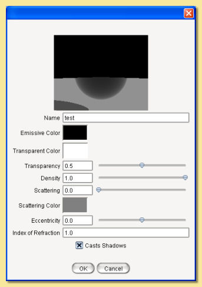
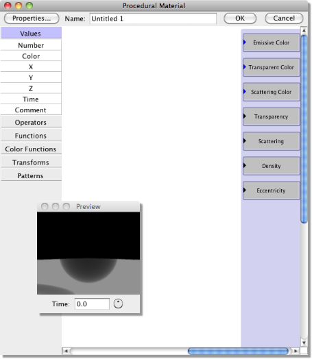
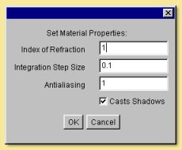
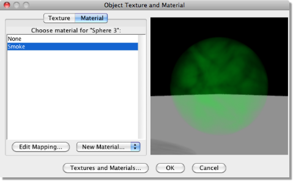
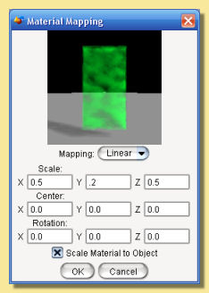

4.2.1 Uniform Materials
As with textures, Uniform materials are applied equally over the whole interior. The dialogue box for
this type of material looks like this:
|  |
The preview view and object can be altered via a pop-up menu activated by right-clicking over the preview
as with the Uniform Texture dialogue. Emissive Color is the colour of light given out by the material (light is actually emitted when rendering with Global Illumination) Transparent Color defines the colour that is transmitted through the material. Its intensity determines how transparent the material is e.g. white is completely transparent and black is completely opaque. although the overall level of transparency is controlled by the Transparency value. Density is the degree of light attenuation in the material. The higher the value, the less the light is able to penetrate through the material. Scattering is the degree to which light is scattered. Scattering Color sets the colour of the light that is scattered. Scattering needs to be non-zero for this to have any effect. Eccentricity defines the direction in which light is scattered (again Scattering must be non-zero) and has values between -1 and +1. A value of 0 is isotropic scattering, i.e. light is scattered equally in all directions. Negative values mean that the light is scattered forwards and positive values mean that the light is back-scattered. As the magnitude of eccentricity tends to 1, the more directional the scattered light becomes. A value of -1 means that all light is scattered straight ahead and +1 is scattered straight back. |
|  |
Exactly the same material properties are listed down the right hand side as are available for uniform
materials. The menu along the left side allows modules to be added to the procedure, exactly as with
procedural textures. Clicking the Properties button displays the following dialogue: 
The Index of Refraction is as described for uniform materials. |
|  |
On the left is a list of the currently defined materials. Click on one and the preview will update
(note that this will often be quite slow due to the complexity in rendering materials). Clicking and
dragging in the preview window will rotate the view. As with the
uniform texture dialogue, right clicking on
the preview displays a menu from which the view and preview object can be changed. Existing materials can be edited and new ones created by clicking on Textures and Materials. To map (i.e. scale, position and orient) the material to the object click on Edit Mapping which will display the material mapping dialogue shown below: |
|  |
As with procedural 3D textures, there is only one mapping type available; Linear. Enter appropriate values in the relevant boxes to alter the scaling, orientation and position of the material within the object. As with textures, the material can be scaled to the bounding box of the object. If Scale Material to Object is checked, then the material will rescale according to the size of the object. The preview window shows the selected object with the mapped material and can be oriented by clicking and dragging within this window. Alternatively, right clicking on the preview displays a menu from which the view can be changed. |